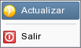

Actualizar Gestotux
¿Para que sirven las actualizaciones?
Las actualizaciones es un metodo dinamico de mantener a su programa siempre al corriente con todos los cambios que van ocurriendo y las mejoras que se introducen en el programa. Es importante para la rapida eliminación de errores que puede haber sucedido durante el desarrollo o simplemente la ampliación a una mayor capacidad de su programa.
¿Cuando es necesario actualizar el programa?
Como este programa ha sido desarrollado especificamente para sus necesidades, se le indicara cuando hay actualizaciones lista para que usted pueda simplemente instalarlas y disfrutarlas. Pongase en contacto con su representante para saber cuando estan disponibles.
¿Como se Actualiza el programa?
Simplemente inicie el programa como lo haria normalmente. A continuación, ingrese al menu "Archivo" y elija la opcion "Actualizar", tal cual se muestra en la figura de abajo.

A continuación aparecera una ventana que le permite marcar 2 opciones:
- Verificar actualizaciones generales del programa: le va a permitir obtener las actualizaciones que corresponden al funcionamiento general del programa.
- Verificar actualizacion de cliente especifico: Le permite mantenerse al tanto de las actualizaciones a las partes especializadas que se desarrollaron exclusivamente para usted. Recuerde que debe ingresar su nombre de usuario y contraseña que le proporciono su vendedor o representante para que pueda verificar este tipo de actualizaciones. Si no lo posee todavia, pongase en contacto con su represetnante o vendedor.
A continuación haga click sobre el boton  Iniciar para comenzar a actualizar el programa
Recomendamos que reinicie el programa luego de terminadas correctamente las actualizaciones para un mejor funcionamiento.
Iniciar para comenzar a actualizar el programa
Recomendamos que reinicie el programa luego de terminadas correctamente las actualizaciones para un mejor funcionamiento.